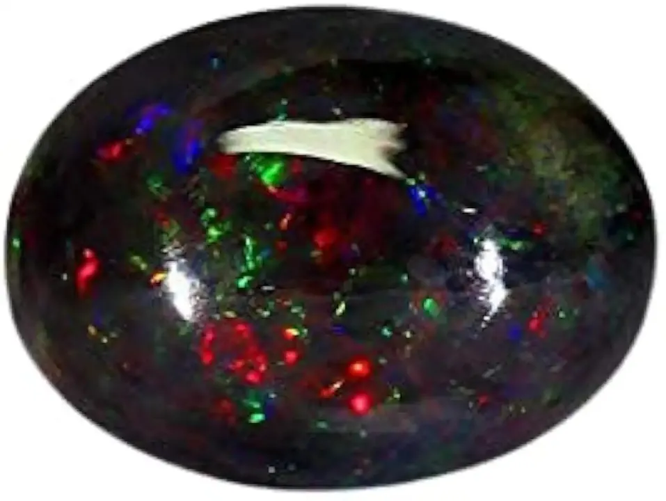

黑歐泊與火歐泊：澳洲與衣索比亞的對決
黑歐泊像把整個星空塞進一顆石頭，火歐泊像凝固的火焰——它們都是歐泊，價格卻能差一百倍。

核心定義
歐泊（opal）由二氧化矽小球規則排列而成，會把白光拆成七彩——這叫「變彩」（play of color）。黑歐泊（black opal）指深色體色上浮現變彩，通常產於澳洲閃電嶺（Lightning Ridge），是歐泊中的王者；火歐泊（fire opal）則以橙紅體色著稱，多產於墨西哥，變彩可有可無。
一句話記住：黑歐泊賣「背景的暗」與「變彩的亮」，火歐泊賣「本體的橙紅」——兩者是歐泊家族兩種完全不同的美學。
特徵與分類
| 品種 | 體色 | 變彩 | 主產地 | 價格級別 |
|---|---|---|---|---|
| 黑歐泊 | 深灰/黑 | 極強 | 澳洲閃電嶺 | 極高 |
| 白歐泊 | 淺白 | 中強 | 澳洲庫伯佩迪 | 中 |
| 火歐泊 | 橙紅（可無變彩） | 弱至無 | 墨西哥 | 中高 |
| 礫背歐泊 | 鐵礦石母岩 | 中強 | 澳洲昆士蘭 | 中高 |
| 水晶歐泊 | 透明 | 強 | 澳洲 | 高 |
歐泊的變彩由矽球直徑決定：球越大，色譜越偏紅；球越小，越偏藍紫——這是納米級的光學工程，卻由大自然完成。
科學原理
歐泊的變彩是「光子晶體」效應：二氧化矽小球直徑約 150–300 奈米，規則排列成三維光柵；白光射入後，不同波長在不同角度被繞射——於是同一顆石頭，轉個角度就換一種顏色。這就是「play of color」的物理本質。
黑歐泊的「黑」其實是鐵與有機物的混入——深色體色讓變彩更顯眼，所以黑歐泊的價值常常是白歐泊的數倍。火歐泊的橙紅則來自鐵離子；它若同時帶變彩（rare fire opal），價格更是飆升。
鑑定與鑑別方法
- 看體色深淺：黑歐泊要求深色底+明顯變彩
- 看變彩覆蓋率與色譜：紅/紫變彩最貴
- 測比重：歐泊約 1.9–2.2，質輕
- 警惕三層石：黑歐泊常以「雙層/三層石」加襯墊造假
- 含水測試：部分衣索比亞歐泊易脫水裂紋
市場行情與保養建議
行情：黑歐泊 2026 年零售參考，普通變彩每克拉新台幣數千元，頂級紅彩覆蓋率高者可達每克拉 10–30 萬元；火歐泊則多在每克拉數百至數千元——同為歐泊，價差百倍。
提醒：歐泊硬度僅 5.5–6.5、且含 3–10% 水分——怕乾燥、怕撞擊、怕油污。購買時認明「天然/處理/合成」與是否為拼合石。價格僅供參考，非投資建議。
常見誤區
墨西哥（火歐泊）、衣索比亞（近年大產）、巴西都有歐泊——但頂級黑歐泊幾乎都來自澳洲閃電嶺。
多數火歐泊只有橙紅體色、沒有變彩——帶變彩的火歐泊是稀有珍品，價格天差地別。
冷知識
拉丁語 opalus 可能源自梵語 upala（寶石）——但羅馬人一度以為歐泊是「所有寶石的合體」，稱它 opalus，意為「集合之石」。
澳洲閃電嶺（Lightning Ridge）相傳因閃電擊中鐵礦露頭而得名——如今它是全球黑歐泊的聖地。
反直覺觀點
多數人以為寶石怕火不怕水——但部分歐泊（尤其衣索比亞產）會吸水、脫水、甚至裂開。對歐泊來說，浴室比火爐更危險。
一般寶石越透越貴，歐泊卻相反——黑歐泊的價值正在於「不透光的深色底」襯托變彩。歐泊的美，是逆著寶石常理來的。